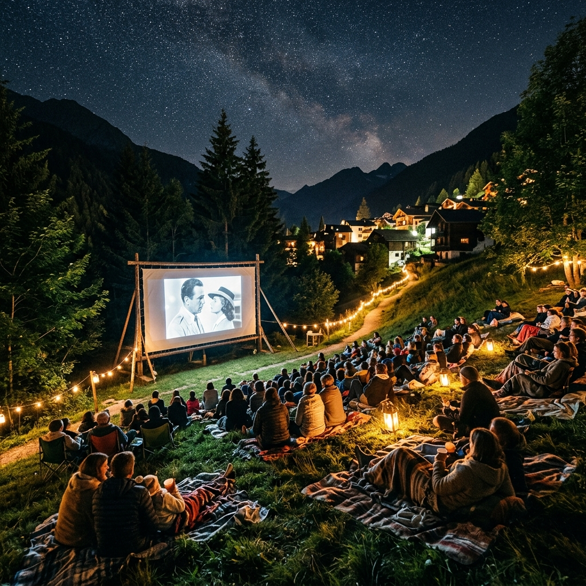
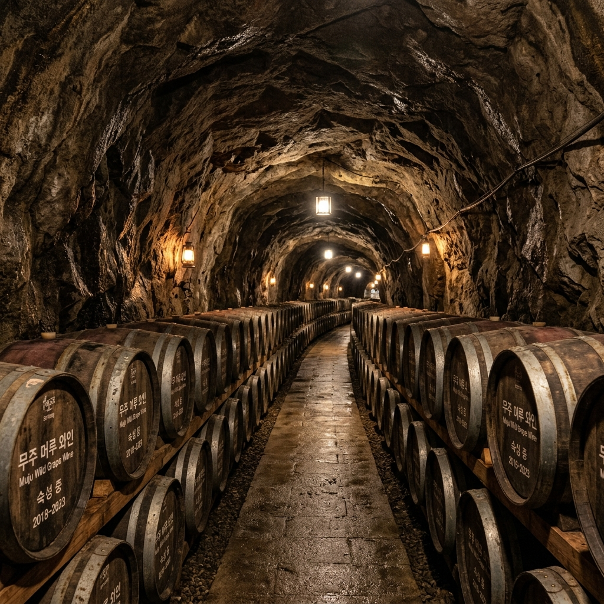
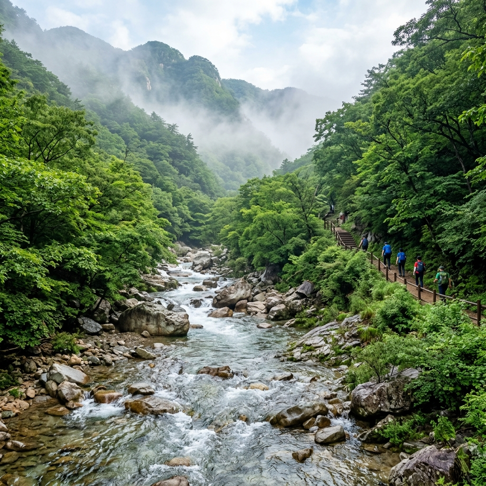

전라북도 무주군 적상면과 무주읍 일원에 자리한 무주 산골영화제는 대한민국에서 가장 독특한 감성을 가진 영화제 중 하나입니다. 부산국제영화제나 전주국제영화제처럼 화려한 레드카펫과 대형 스타의 행렬 대신, 이 영화제는 덕유산의 울창한 숲과 청정한 밤하늘, 그리고 산촌의 조용한 정취를 배경으로 영화를 감상하는 특별한 경험을 제공합니다.
무주 산골영화제는 1998년 첫 회를 시작으로 지역 공동체와 영화 문화를 잇는 가교 역할을 해왔습니다. 도시의 대형 멀티플렉스와는 전혀 다른 맥락에서 탄생한 이 영화제는 산골 마을 사람들에게 영화 문화를 가까이 가져다주겠다는 순박한 뜻에서 출발했습니다. 수십 년이 지난 지금도 그 정신은 변함없이 이어져, 주민과 방문객이 함께 별빛 아래 스크린을 바라보는 축제의 원형을 지켜나가고 있습니다.
영화제의 가장 큰 매력은 무엇보다 장소에 있습니다. 무주등나무운동장을 메인 야외 상영 공간으로 사용하는 이 행사는, 사방이 울창한 숲으로 둘러싸인 공간에서 밤하늘 별을 올려다보며 영화를 감상하는 경험을 제공합니다. 스크린 뒤편으로 덕유산의 능선이 실루엣으로 펼쳐지고, 관객들은 풀밭 위에 자리를 잡고 앉아 자연과 하나가 됩니다. 도시 어느 극장에서도 재현할 수 없는 압도적인 분위기입니다.
무주 산골영화제는 국내외 독립 영화, 단편 영화, 다큐멘터리, 애니메이션 등 다양한 장르의 작품을 소개합니다. 특히 상업 영화에서는 좀처럼 접하기 어려운 실험적 작품이나 지역 독립 영화 작가들의 수작을 만날 수 있다는 점이 영화 마니아들의 발길을 끌어당기는 이유입니다. 영화만큼이나 풍성한 음악 공연, 전시, 체험 행사가 어우러져 5일 내내 다채로운 문화 축제가 펼쳐집니다.
2026년은 제29회 무주 산골영화제가 열리는 해입니다. 30주년을 앞둔 뜻깊은 시점으로, 역대 최대 규모의 프로그램 구성이 예상됩니다. 지역 향토 문화와 영화 예술이 절묘하게 어우러지는 이 특별한 5일간의 축제를 놓치지 마시기 바랍니다.
2026년 무주 산골영화제는 2026년 6월 4일(목)부터 6월 8일(월)까지 5일간 개최됩니다. 6월 초는 장마가 본격적으로 시작되기 직전의 시기로, 초여름의 신선한 밤공기와 함께 야외 상영을 즐기기에 가장 이상적인 계절입니다. 낮에는 덕유산과 무주구천동을 탐방하고, 저녁에는 영화제로 돌아오는 일정이 자연스럽게 맞아떨어집니다.
행사 기간 5일 동안 무주등나무운동장과 무주예체문화관을 비롯한 여러 상영 공간에서 수십 편의 영화가 상영됩니다. 개막작과 폐막작은 야외 메인 스크린에서 상영되며, 개막일 저녁에는 감독 및 배우 초청 무대 인사와 함께 화려한 개막 행사가 펼쳐집니다. 폐막일 저녁에는 경쟁 부문 시상식과 함께 폐막 공연이 이어집니다.
프로그램은 크게 경쟁 부문과 비경쟁 부문으로 나뉩니다. 경쟁 부문에서는 국내외 독립 단편 및 장편 영화들이 최우수작 선정을 겨루며, 심사위원단과 관객이 함께 수상작을 결정합니다. 비경쟁 부문에서는 국제 영화제 수상작, 특별 초청 다큐멘터리, 가족 애니메이션 등 다양한 작품이 상영됩니다.
영화 상영 외에도 음악 공연, 설치 미술 전시, 독립 영화 토크쇼, 영화 관련 워크숍 등 다양한 부대 행사가 매일 진행됩니다. 특히 저녁 야외 공연 무대에서는 지역 음악가들과 초청 밴드의 라이브 공연이 펼쳐져, 영화와 음악이 어우러지는 축제의 분위기가 최고조에 달합니다. 무주 지역 농특산물 직거래 장터도 함께 열려 머루와인, 사과, 천마 등 무주의 청정 먹거리를 한자리에서 만날 수 있습니다.
어린이와 가족 단위 방문객을 위한 낮 시간대 프로그램도 탄탄하게 구성됩니다. 어린이 영화 상영, 영화 만들기 체험 워크숍, 애니메이션 드로잉 교실 등이 운영되어 온 가족이 함께 즐길 수 있는 영화 문화 축제로서의 면모를 충분히 갖추고 있습니다.
| 날짜 | 주요 일정 | 특이 사항 |
|---|---|---|
| 6월 4일(목) | 개막식 · 개막작 상영 · 개막 공연 | 야외 메인 스크린 첫 점등, 감독 무대 인사 |
| 6월 5일(금) | 경쟁 부문 상영 · 토크쇼 · 음악 공연 | 독립 단편 경쟁 집중 상영 |
| 6월 6일(토) | 현충일 특별 상영 · 장터 · 가족 프로그램 | 공휴일, 관객 최고 집중 예상 |
| 6월 7일(일) | 경쟁 부문 상영 · 관객상 투표 · 야외 파티 | 관객 심사단 최종 투표 진행 |
| 6월 8일(월) | 시상식 · 폐막작 상영 · 폐막 공연 | 경쟁 부문 수상작 발표, 폐막 파티 |
2026 무주 산골영화제 티켓은 2026년 5월 14일(목) 오후 2시부터 공식 홈페이지(mjff.or.kr)에서 사전 예매를 시작했습니다. 인기 상영 회차와 야외 메인 스크린 티켓은 예매 오픈 직후 빠르게 소진되는 경향이 있으므로, 가능하면 일정이 확정된 즉시 예매를 진행하시기 바랍니다.
입장료 체계는 상영 방식에 따라 구분됩니다. 일반 상영(실내)은 1편당 6,000원이며, 야외 상영 1일권은 30,000원입니다. 야외 1일권은 해당 날짜 야외 상영 프로그램 전체에 입장 가능한 패스 형식으로, 하루 동안 여러 편을 연속으로 관람하실 계획이라면 1일권이 훨씬 경제적입니다. 영화제 기간 전체 패스권도 별도로 판매될 수 있으니 공식 홈페이지에서 최신 정보를 확인하시기 바랍니다.
예매 방법은 공식 홈페이지에서 회원 가입 후 원하는 상영 회차를 선택하고 결제하는 방식입니다. 결제 후 QR 코드가 포함된 전자 티켓을 이메일 또는 모바일로 수신하며, 현장 입장 시 해당 QR 코드를 제시하면 됩니다. 스마트폰 화면으로 제시해도 무방하지만, 혹시 모를 상황에 대비해 출력본을 준비해 두시는 것도 좋습니다.
현장 발권 창구도 운영됩니다. 영화제 기간 중 무주등나무운동장 입구 현장 매표소에서 당일 잔여 티켓을 구매할 수 있습니다. 단, 인기 상영작은 사전 예매 단계에서 전석 매진될 가능성이 높습니다. 특히 개막작, 폐막작, 경쟁 부문 수상 가능성이 높은 기대작은 반드시 사전 예매로 좌석을 확보하시기 바랍니다.
단체 관람(10인 이상)의 경우 별도 단체 예매 창구를 이용하면 할인 혜택이 적용될 수 있으므로 영화제 사무국(mjff.or.kr 내 문의 게시판)에 사전 문의를 권장합니다. 장애인, 국가유공자, 경로 우대 대상자에 대한 할인 정책도 별도로 운영될 수 있으니 공식 홈페이지를 통해 확인하시기 바랍니다.
무주 산골영화제의 심장부는 단연 무주등나무운동장입니다. 이름에서 알 수 있듯 등나무가 우거진 독특한 분위기의 이 운동장은, 무주읍 내에 위치하여 접근성이 좋으면서도 사방이 산으로 둘러싸인 자연 친화적인 공간입니다. 야외 메인 스크린이 이 운동장 중앙에 설치되며, 관객들은 잔디 위에 돗자리를 펼치거나 제공되는 의자에 앉아 영화를 감상합니다.
무주등나무운동장 야외 상영의 가장 큰 특징은 하늘이 열린 개방감입니다. 지붕 없는 야외 공간에서 별이 반짝이는 여름 밤하늘을 배경으로 영화를 보는 경험은, 어떤 최신 극장 시설도 흉내 낼 수 없는 감동을 선사합니다. 특히 날씨가 맑은 밤이면 덕유산 위로 쏟아지는 별빛이 스크린의 빛과 어우러져 신비로운 분위기를 연출합니다.
야외 상영 관람을 위해 준비하면 좋은 물품들이 있습니다. 6월 초 무주의 밤 기온은 서울보다 3~5도 낮아 생각보다 쌀쌀할 수 있습니다. 얇은 점퍼나 카디건을 반드시 챙겨 가시기 바랍니다. 돗자리나 캠핑 의자는 편안한 관람을 위해 필수 아이템입니다. 잔디 위에 오래 앉아 있으면 습기가 올라올 수 있으니 방수 돗자리를 추천합니다.
야외 상영장 내부에는 간식과 음료를 판매하는 푸드 트럭과 부스가 운영됩니다. 팝콘, 핫도그, 생맥주, 무주 머루와인까지 다양한 먹거리를 즐기면서 영화를 감상할 수 있습니다. 단, 유리병이나 알코올 도수가 높은 주류의 반입은 제한될 수 있으니 현장 규정을 확인하시기 바랍니다.
야외 상영 시간은 대개 일몰 이후인 오후 8시에서 9시 사이에 시작됩니다. 6월 초 무주의 일몰 시각이 오후 7시 40분 안팎이므로, 오후 7시경 도착하여 자리를 선점하고 주변 분위기를 즐기는 것이 최선입니다. 운동장 내 곳곳에 랜턴과 조명이 설치되어 아늑한 분위기를 조성하며, 상영 전 음악 공연이 진행되는 경우도 많습니다.
야외 1일권(30,000원)을 소지하면 해당 날짜에 운동장에서 진행되는 야외 상영 프로그램 전체에 입장이 가능합니다. 저녁 8시 상영 외에도 오후 시간대에 별도 야외 프로그램이 진행될 수 있으니 당일 현장 시간표를 확인하시기 바랍니다.
야외 상영과 함께 무주 산골영화제의 또 다른 축은 무주예체문화관에서 진행되는 실내 상영입니다. 무주예체문화관은 무주읍 내에 위치한 복합 문화 시설로, 독립 영화 상영에 최적화된 스크린과 음향 시스템을 갖추고 있습니다. 야외 상영과 달리 날씨의 영향을 받지 않으며, 밀폐된 공간에서 집중력 높게 영화를 감상할 수 있다는 장점이 있습니다.
실내 상영관은 경쟁 부문 작품, 국제 초청작, 단편 영화 등 섬세한 서사와 영상미를 감상하기에 알맞은 작품들을 주로 배정받습니다. 야외의 개방적인 분위기와는 다른, 차분하고 집중적인 관람 환경을 원하시는 분들에게 특히 추천합니다.
실내 상영 티켓은 1편당 6,000원으로, 영화 1편만 선택적으로 관람하기에 적합한 합리적인 가격입니다. 자리 배정은 지정석 방식이 적용되는 경우가 많으므로 예매 시 원하는 좌석을 직접 선택하시기 바랍니다. 실내 상영관 좌석 수는 야외 상영에 비해 제한적이므로 인기 작품의 경우 빠른 예매가 필수입니다.
무주예체문화관 주변에는 주차 공간이 마련되어 있으며, 무주등나무운동장과도 도보 이동이 가능한 거리입니다. 하루 일정을 짤 때 오전에는 실내 상영을 관람하고 낮에는 지역 명소를 탐방한 뒤, 저녁에 야외 상영을 즐기는 방식으로 두 상영관을 모두 활용하면 영화제를 가장 알차게 즐길 수 있습니다.
실내 상영관에서는 영화 상영 후 감독과 관객의 대화(GV, Guest Visit) 세션이 진행되기도 합니다. 영화를 만든 감독이 직접 작품의 의도와 제작 비화를 이야기하는 이 시간은, 일반 극장에서는 절대 경험할 수 없는 무주 산골영화제만의 특별한 선물입니다. GV 일정은 영화제 홈페이지 및 현장 프로그램 북을 통해 확인할 수 있습니다.

무주를 이야기할 때 빼놓을 수 없는 것이 바로 머루와인입니다. 덕유산 자락의 청정 환경에서 자란 야생 머루(산 포도)로 만든 무주 머루와인은, 일반 포도와인과는 다른 진하고 깊은 맛으로 많은 이들에게 사랑받는 무주의 특산물입니다. 무주 지역에는 머루와인을 생산하는 여러 와이너리가 있으며, 그중에서도 머루와인 동굴은 가장 대표적인 관광 명소입니다.
머루와인 동굴은 자연 암반 동굴 또는 인공적으로 조성된 지하 터널 형태의 저장고로, 연중 일정한 온도(약 13~15도)와 습도를 유지하며 머루와인을 최적의 조건으로 숙성시킵니다. 동굴 내부에는 수백 개의 와인 통이 가지런히 줄지어 있으며, 조용하고 서늘한 공간에서 와인이 천천히 익어가는 모습은 그 자체로 독특한 볼거리입니다. 6월의 뜨거운 햇살을 피해 시원한 동굴 속에서 와인 투어를 즐기는 것은 영화제 방문 시 최고의 낮 일정으로 꼽힙니다.
대부분의 머루와인 동굴 투어는 가이드 설명과 함께 진행되며, 투어 말미에는 머루와인 시음 시간이 제공됩니다. 드라이(Dry)부터 스위트(Sweet)까지 다양한 스타일의 머루와인을 맛보고, 마음에 드는 제품을 현장에서 구매할 수 있습니다. 머루와인은 일반 주류 마트에서는 구하기 어려운 로컬 특산품이라 기념품으로도 매우 인기가 높습니다.
머루와인 동굴에서는 투어 외에도 와인 담그기 체험, 레이블 만들기 체험 등 다양한 체험 프로그램이 운영됩니다. 사전 예약이 필요한 경우가 많으니 방문 전 해당 와이너리에 문의하시기 바랍니다. 무주 산골영화제 기간에는 영화제와 연계된 특별 프로모션이 진행되는 경우도 있으니, 영화제 홈페이지(mjff.or.kr)를 통해 관련 이벤트 정보도 확인해 보시기 바랍니다.
무주를 대표하는 머루와인 생산지로는 무주군 안성면, 설천면 등이 잘 알려져 있습니다. 영화제 행사장인 무주읍에서 차로 15~25분 거리에 주요 머루와인 농장이 위치하므로, 영화제 낮 시간을 활용해 와이너리 투어를 계획하시기 바랍니다. 일부 와이너리는 와인과 함께 즐길 수 있는 치즈, 육포 등의 와인 안주와 픽닉 세트도 제공합니다. 덕유산을 배경으로 한 머루 포도밭에서 와인 한 잔을 즐기는 경험은, 영화제의 밤 못지않게 낭만적인 무주 여행의 한 장면이 될 것입니다.
무주 산골영화제와 함께 반드시 방문해야 할 자연 명소가 바로 무주구천동 계곡과 덕유산입니다. 무주구천동은 무주군 설천면 심곡리에서 구천동 계곡 끝까지 이어지는 약 36km에 달하는 긴 계곡으로, 덕유산 국립공원의 대표적인 자연 탐방 코스입니다. '구천동 33경'이라는 이름으로 알려진 크고 작은 경승지들이 계곡을 따라 펼쳐집니다.
6월 초는 무주구천동 계곡이 가장 아름다운 계절 중 하나입니다. 신록이 최고조에 달한 초여름의 울창한 숲 사이로 맑고 시원한 계곡물이 흘러내리며, 폭포와 소(沼)가 연속해서 등장하는 구천동 계곡은 그 자체로 한 편의 영화 같은 풍경을 연출합니다. 무더위가 시작되기 직전인 6월 초의 기온과 수온은 계곡 트레킹에 이상적입니다.
무주구천동 계곡 탐방 코스는 탐방 거리와 체력에 따라 다양하게 선택할 수 있습니다. 가볍게 1~2시간 산책을 원한다면 구천동 계곡 입구에서 나제통문까지 이어지는 평탄한 탐방로를 이용하시기 바랍니다. 좀 더 깊이 들어가고 싶은 분께는 백련사까지 이어지는 코스(약 5km, 편도 2시간)를 추천합니다. 백련사는 신라 시대 창건된 유서 깊은 사찰로, 계곡 깊숙이 자리한 고요한 분위기가 일품입니다.
덕유산 정상(향적봉, 해발 1,614m) 등산을 계획하신다면, 무주리조트 곤돌라를 이용하는 방법을 추천합니다. 곤돌라를 타면 설천봉(해발 1,520m)까지 약 25분 만에 오를 수 있으며, 설천봉에서 향적봉까지는 완만한 능선길로 도보 15~20분이면 충분합니다. 정상에서 바라보는 전라북도와 경상남도의 광활한 산줄기 파노라마는 영화제 전날 또는 당일 오전에 경험하기에 충분한 감동을 줍니다.
무주구천동 계곡과 덕유산을 영화제와 연계하는 최적 일정은 오전에 계곡 트레킹 또는 덕유산 등산을 마치고, 낮에는 무주읍 시내에서 점심식사 및 머루와인 동굴 투어를 즐긴 뒤, 저녁 영화제에 참석하는 당일 코스입니다. 2박 3일 이상의 일정이라면 1일차 영화제 → 2일차 덕유산·구천동 → 3일차 머루와인 동굴 순서로 구성하는 것도 훌륭한 선택입니다.

| 코스명 | 거리 / 소요 시간 | 특징 | 난이도 |
|---|---|---|---|
| 구천동 계곡 산책 코스 | 2~4km / 1~2시간 | 평탄, 계곡 산책, 나제통문 경유 | 쉬움 |
| 백련사 탐방 코스 | 5km / 약 2시간 (편도) | 계곡 깊숙이, 신라 사찰 백련사 방문 | 보통 |
| 곤돌라 이용 향적봉 코스 | 곤돌라 25분 + 도보 20분 | 덕유산 정상, 파노라마 조망 | 쉬움 (곤돌라 이용 시) |
| 구천동 전 코스 종주 | 약 18km / 5~7시간 | 구천동 33경 완주, 트레킹 마니아 코스 | 어려움 |
영화제 기간(6월 4~8일)에는 무주 지역 숙박 시설 예약이 빠르게 마감됩니다. 특히 6월 6일(현충일 공휴일)을 포함하는 주말 연휴 구간의 숙박은 영화제 개막 전인 5월 중에 미리 예약하시는 것을 강력히 권장합니다.
무주리조트는 무주 지역 최대 규모의 숙박 시설입니다. 덕유산 국립공원 내에 위치하며, 호텔급 객실부터 콘도형 가족 객실까지 다양한 형태를 갖추고 있습니다. 영화제 행사장인 무주읍까지 차로 약 20~25분 거리이므로 접근성은 다소 떨어지지만, 시설 수준과 자연 환경이 탁월합니다. 골프장, 수영장, 스파 등 부대 시설이 풍부하여 영화제와 리조트 휴양을 결합한 여행을 원하시는 분께 적합합니다.
무주읍 및 무주군 곳곳의 펜션은 산골영화제 방문객에게 가장 인기 있는 숙박 선택지입니다. 덕유산 자락과 계곡 주변에 크고 작은 독립형 펜션이 다수 운영되고 있으며, 자연 속에서 소규모 그룹이 오붓하게 머물기에 이상적입니다. 가격은 평일 기준 1박 80,000~180,000원(객실 크기 및 성수기 여부에 따라 상이)이며, 영화제 기간에는 주말 요금이 적용되어 최대 2~3배 높아질 수 있습니다.
캠핑을 즐기시는 분께는 무주구천동 계곡 인근의 야영장이 최고의 선택입니다. 덕유산 국립공원 내 탐방지원센터 주변의 지정 야영 구역을 이용하거나, 민간 캠핑장을 이용할 수 있습니다. 별이 쏟아지는 덕유산 밤하늘 아래 텐트를 치고, 낮에는 계곡을 즐기고 저녁에는 영화제로 이동하는 완벽한 여행 루틴이 가능합니다. 캠핑장은 영화제 기간에 역시 빠르게 마감되니 사전 예약이 필수입니다.
무주읍 시내에도 게스트하우스와 모텔이 여럿 있습니다. 영화제 행사장과 도보 거리에 위치한 무주읍 내 숙박 시설은 교통 측면에서 가장 편리합니다. 다만 시설 수준이 다양하므로, 예약 전 최근 후기를 꼼꼼히 확인하시기 바랍니다.
| 숙박 유형 | 대략적 위치 | 예상 요금 (1박) | 추천 대상 |
|---|---|---|---|
| 무주리조트 | 덕유산 국립공원 내 | 150,000~350,000원 | 커플, 가족 (부대 시설 중시) |
| 계곡·산림 펜션 | 무주군 각 면 단위 | 80,000~200,000원 | 소그룹, 자연 선호 여행객 |
| 무주읍 게스트하우스 | 무주읍 시내 | 30,000~60,000원 | 혼행, 배낭여행자 |
| 캠핑장 야영 | 구천동 계곡 인근 | 15,000~40,000원 (사이트당) | 캠핑족, 자연 만끽 여행객 |
무주는 청정 자연 환경에서 자란 다양한 향토 먹거리로 유명합니다. 덕유산의 신선한 공기와 청정수, 비옥한 고랭지 토양이 만들어내는 무주의 농산물과 음식들은 방문객들에게 잊을 수 없는 미식 경험을 선사합니다.
무주의 대표 먹거리 첫 번째는 단연 반딧불 쏘가리 매운탕입니다. 무주의 청정 금강 상류에서 잡히는 쏘가리는 살이 쫀득하고 담백하여 매운탕으로 끓이면 국물이 깊고 시원합니다. 무주 지역 식당에서 맛볼 수 있는 쏘가리 매운탕은 무주를 찾는 여행객들이 반드시 맛봐야 할 향토 음식 중 하나입니다.
무주 사과는 고랭지 사과의 대명사로 알려져 있습니다. 해발 300m 이상의 고지대에서 일교차가 큰 환경 속에서 자라는 무주 사과는 당도가 높고 과육이 아삭하여 전국적으로 유명세를 타고 있습니다. 영화제 기간에 열리는 농특산물 장터에서 직접 농가에서 출하된 신선한 사과와 가공품(사과 주스, 사과 잼 등)을 구매할 수 있습니다.
천마 음식도 무주의 특색 있는 먹거리입니다. 덕유산 자락에서 채취되는 천마(天麻)는 신경계 강화와 혈액순환에 좋은 것으로 알려진 약용 식물로, 무주에서는 천마를 이용한 천마막걸리, 천마 삼겹살 쌈 등 다양한 향토 음식이 발달해 있습니다.
무주읍 시내에는 현지인들이 즐겨 찾는 식당가가 형성되어 있습니다. 산채 비빔밥, 도토리묵 무침, 순두부찌개 등 산골의 담백한 향토 음식을 선보이는 식당들이 영화제 기간에도 정상 영업합니다. 영화제 방문객이 몰리는 저녁 시간대에는 인기 식당의 대기가 길어질 수 있으니, 영화 상영 전 오후 5~6시 이른 저녁을 드시거나 사전에 예약을 해두시기 바랍니다.
영화제 현장에서도 다양한 푸드 트럭과 먹거리 부스가 운영됩니다. 머루와인 시음, 무주 사과 주스, 지역 수제 맥주, 떡볶이, 닭꼬치 등 야외 축제 분위기에 어울리는 먹거리가 가득합니다. 영화를 보기 전 영화제 현장에서 여러 가지 먹거리를 즐기는 것도 산골영화제의 소박하고 따뜻한 축제 문화를 경험하는 특별한 방법입니다.
무주는 대도시에서의 접근이 쉽지 않은 산간 지역입니다. 사전에 교통편을 철저히 계획하셔야 여유롭고 즐거운 여행이 될 수 있습니다.
자가용 이용 시: 서울에서는 통영대전고속도로(무주 IC)나 무주·진안·장수 방면 국도를 이용합니다. 서울 강남에서 무주읍까지 약 2시간 30분~3시간 소요됩니다. 대전에서는 약 1시간, 전주에서는 약 1시간 30분, 부산에서는 약 2시간 30분 거리입니다. 내비게이션에 '무주등나무운동장' 또는 '무주군청'을 목적지로 설정하시면 됩니다.
영화제 기간 중 무주읍 일원의 주차 공간은 상당히 혼잡합니다. 영화제 측에서 별도 임시 주차장을 운영할 가능성이 높으며, 무주등나무운동장 인근 공영주차장, 무주군청 주차장 등을 이용할 수 있습니다. 행사 당일에는 이른 오후에 도착하여 주차 공간을 미리 확보하시기 바랍니다. 6월 6일(현충일) 및 주말에는 주차장이 조기 만차 될 수 있으니, 영화제 홈페이지나 현장 안내 방송을 주의 깊게 청취하시기 바랍니다.
대중교통 이용 시: 고속버스를 이용하실 경우 서울 남부터미널 또는 동서울터미널에서 무주행 직행버스를 이용하시면 됩니다. 하루 운행 횟수가 제한적이므로 사전에 시간표를 확인하고 예매하시기 바랍니다. 대전 서부터미널에서도 무주행 버스가 운행되며, 대전까지 KTX를 이용한 후 대전에서 무주행 버스로 환승하는 방법이 서울에서 출발하는 경우 효과적일 수 있습니다.
무주버스터미널에서 무주등나무운동장까지는 도보 15~20분 거리로 걸어서 이동이 가능합니다. 짐이 많거나 이동이 불편하다면 택시를 이용하시기 바랍니다. 영화제 기간에는 무주읍 내 택시 수요가 증가하므로 영화 종료 후 귀숙 시 택시 이용이 어려울 수 있습니다. 카카오T 등 앱을 통한 사전 예약이나, 숙소 픽업 서비스를 미리 확인해 두시기 바랍니다.
전세 버스나 여행사 패키지를 이용하는 것도 편리한 방법입니다. 영화제 기간에는 서울 및 주요 도시에서 무주를 왕복하는 당일 또는 1박 2일 패키지 상품이 출시되는 경우가 있습니다. 교통과 숙박, 입장권을 한 번에 해결할 수 있어 여행 준비를 간소화하고 싶은 분께 적합합니다.
| 출발지 | 이동 수단 | 소요 시간 | 참고 사항 |
|---|---|---|---|
| 서울 (강남 기준) | 자가용 (통영대전고속도로) | 약 2시간 30분~3시간 | 무주 IC 하차 후 국도 이용 |
| 서울 남부터미널 | 직행버스 → 무주버스터미널 | 약 2시간 40분~3시간 | 1일 운행 횟수 제한, 사전 예매 필수 |
| 대전 서부터미널 | 버스 → 무주버스터미널 | 약 1시간 10분 | KTX 대전역 환승 가능 |
| 전주 | 버스 또는 자가용 | 약 1시간 30분 | 무주-전주 간 버스 운행 |
| 부산 | 자가용 또는 버스 환승 | 약 2시간 30분 | 대구 또는 전주 경유 환승 권장 |